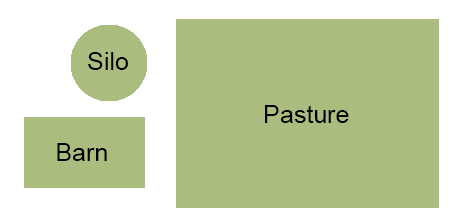

Farms 101
Want to know more about where your food comes from? Here's an overview of some of the most common parts of a working farm.

Silo
A tall, circular structure used for storing food ("silage") for livestock. Along with windmills for pumping water, silos are one of the most recognizable features of the landscape in a farming region.
Barn
A large building with a high ceiling and a peaked roof, used to store machinery and shelter some animals. Rural areas across the U.S. are dotted with older wooden barns, usually red. Modern barns are often metal.
Pasture
A fenced expanse of unplanted farmland where livestock graze and wander. Especially in Spring, animals eat mainly plants that grow in the pasture, while other times of year their diets are supplemented with silage.